<!DOCTYPE html>
<html lang="en">
<head>
  <meta charset="UTF-8">
  <meta name="viewport" content="width=device-width, initial-scale=1.0">
  <meta http-equiv="X-UA-Compatible" content="ie=edge">
  <title>Thames Rives Anglers Association</title>
  <link rel="stylesheet" href="css/reset.css">
  <link href="https://fonts.googleapis.com/css?family=Josefin+Sans:300,400|Montserrat:300,300i|Playfair+Display:300,300i,400,400i|Quicksand:400,500,700&display=swap" rel="stylesheet">
  <link rel="stylesheet" href="css/main.css">
</head>
<body>
  <main id="wrapper">
    <div id="header-wrapper">
      <header id="other-head">
        <div id="logo">
          <a href="index.html"></a>
        </div>
        <nav id="mainnav">
          <ul>
            <li><a href="index.html">HOME</a><li>
            <li><a href="about.html">ABOUT</a><li>
            <li><a href="projects.html">PROJECTS</a><li>
            <li><a href="events.html" class="selected">EVENTS</a><li>
            <li><a href="resources.html">RESOURCES</a><li>
            <li><a href="contact.html">CONTACT</a><li>
          </ul>
        </nav>

        <section id="page-info-bg" class="clear">
          <article id="page-info">
            <h1>UPCOMING TRAA EVENTS</h1>
            <h2>Participate, Help Out, Have Fun</h2>
            <aside id="page-body">
              <p>Events & activities are what the TRAA's all about! With frequent events suitable for all ages, the TRAA hosts hands-on educational experiences dedicated to the preservation of the aquatic ecosystems of London & the surrounding area. Support our efforts in our next event and become part of the solution, and part of the TRAA familly.</p>
            </aside>
          </article>
        </section>
      </header>
    </div>

    <section id="events-upcoming">
      <h3><span class="h2-italics">Upcoming</span> Events</h3>
      <section id="events-new">
        <div class="events">
          <div class="events-img">
            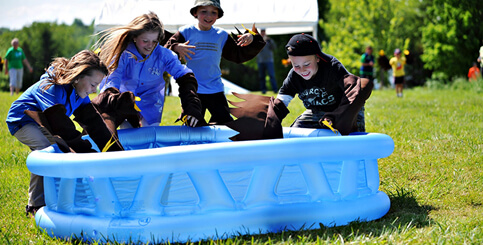
          </div>
          <div class="events-txt">
            <aside class="aside-txt">Fanshawe Conservation Area - May 16 - 17, 2019</aside>
            <h4>Children's Water Festival</h4>
            <p>The TRAA will be taking part in the "Public Night" portion of the event, Thursday, May 16 from 5:00pm to 8:00pm. It will likely be for kids to cast at fish targets which is as much fun for us as it is for the kids! If you can come out and lend a hand please contact any of the Executive directly or Contact Us by email.</p>
          </div>
      </div>
      <div class="events">
        <div class="events-img">
          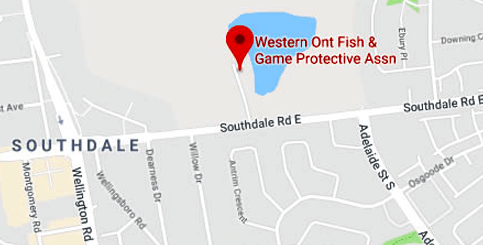
        </div>
        <div class="events-txt">
          <aside class="aside-txt">7:00PM - Wednesday, June 12, 2019</aside>
          <h4>TRAA General Meeting</h4>
          <p>There will be a lot going on over the summer so come on out to the June 12th General Meeting so you know all about upcoming events, projects and other neat stuff. We meet at the Western Ontario Fish & Game Protective Association clubhouse at 790 Southdale Road. As always, guests are always welcome.</p>
        </div>
      </div>
        <div class="events">
          <div class="events-img">
            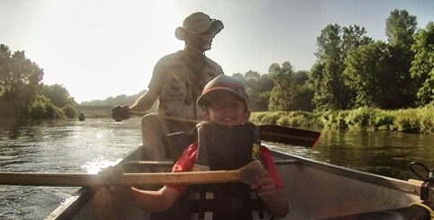
          </div>
          <div class="events-txt">
            <aside class="aside-txt">Saturday, July 13, 2019</aside>
            <h4>TRAA Paddle & Fish</h4>
            <p>We've picked the date for this year's Paddle & Fish but have yet to decide on the route. So far, the route with the most support is the South Thames River east of London. There will be an email confirming details soon but make sure you block July 13th off on your calendar! Contact us with a route suggestion.</p>
          </div>
        </div>
        <div class="events">
            <div class="events-img">
              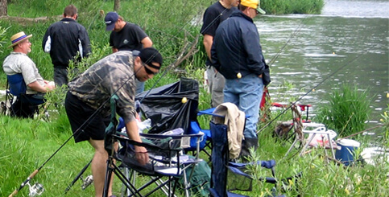
            </div>
            <div class="events-txt">
              <aside class="aside-txt">Thursdays, July & August, 2019</aside>
              <h4>TRAA Fishing Evenings</h4>
              <p>We'll be heading out to try our luck every<br>Thursday evening in July and August this<br>summer. Keep an eye on your email for
              <br>locations and dates as we organize them.<br><br>Send us your suggestions for venues!
              </p>
            </div>
        </div>
      </section>
    </section>

    <section id="events-past">
      <div class="events-past-h3">
        <h3><span class="h2-italics">Past</span> Events</h3>
      </div>
      <nav class="events-past-nav" id="2019">
        <ul><li><a href="#2019">2019</a></li><li><a href="#2018">2018</a></li><li><a href="#2017">2017</a></li><li><a href="#2017">OLDER</a></li><ul>
      </nav>
      <div class="past-column">
        <div class="past-img">
          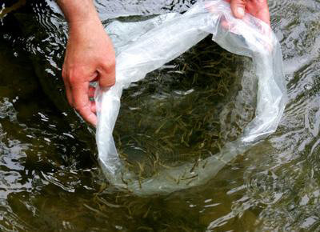
        </div>
        <div class="past-txt">
          <aside class="aside-txt">
            Saturday, May 4, 2019
          </aside>
          <h4>Brown Trout Release</h4>
          <p>The brown trout were transferred from the TRAA hatchery and released at the same site on Medway Creek as in previous years. The brown trout were transferred from the TRAA hatchery and released at the same site on Medway Creek as in previous years.</p><br>
          <p>We were met there by two of the landowners through which this section of Medway Creek flows. They also brought out a large contingent of family and friends to lend a helping hand.</p><br>
          <p>Watch the video for a good idea on how it went.</p><br>
          <p>It was a beautiful day, the stream was in perfect shape and everyone was smiling and laughing. Good times.</p>
        </div>

        <div class="past-img">
          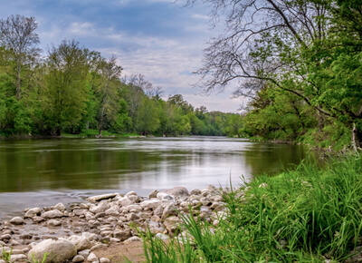
        </div>
        <div class="past-txt">
          <aside class="aside-txt">
            Sunday, May 5, 2019
          </aside>
          <h4>River Cleanup!</h4>
          <p>The TRAA helped again this year with a cleanup of the shoreline & area of river near the Komoka Road bridge.</p>
          <br><p>After meeting at the NEW parking lot for Komoka Provincial Park on Gideon Drive, everyone carpooled to the usual stretch around the bridge.</p>
          <br><p>Thank you to all that showed up to help out!</p>
        </div>

        <div class="past-img">
          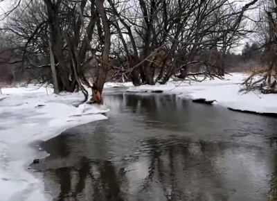
        </div>
        <div class="past-txt">
          <aside class="aside-txt">
            Initial Stream Walk, March, 2019
          </aside>
          <h4>Medway Creek Habitat Project</h4>
          <p>Those of you who have been involved with the brown trout releases over the past few years may recognize this spot on Medway Creek as the release point.</p><br>
          <p>Those of you who have been attending the last few General Meetings will also know that this is part of a 280-metre stretch on which we will be focusing future habitat rehabilitation efforts. We have met with and have the support of the two landowners through which this stretch of Medway Creek flows.</p><br>
          <p>Back in March we put together a short video of our stream walk of Medway Creek, during which we documented areas in need of work and added our initial thoughts.</p><br>
          <p>If you would like to be involved with TRAA projects like this one or one of the many others that we have ongoing, please Contact Us.</p>
        </div>

        <div class="past-img">
          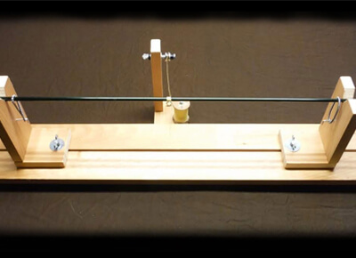
        </div>
        <div class="past-txt">
          <aside class="aside-txt">
            February 18 through March 11, 2019
          </aside>
          <h4>Rod Building - Your First Time</h4>
          <p>This was a series of informal, hands-on sessions that resulted in a spinning or fly rod, assembled by those who took part.</p><br>
          <p>This opportunity was open only to current members of the TRAA, WOFGPA and/or FCFFC.</p><br>
          <p>Rod Building - Your First Time presented by: Thames River Anglers Association, with support from Western Ontario Fish & Game Protective Ass’n and the Forest City Fly Fishing Club.</p><br>
          <p>Click here for Session Plans, Instruction Sheets and Videos from the course.</p>
        </div>
      </div>
      <nav class="events-past-nav" id="2018">
        <ul><li><a href="#2019">2019</a></li><li><a href="#2018">2018</a></li><li><a href="#2017">2017</a></li><li><a href="#2017">OLDER</a></li><ul>
      </nav>
      <div class="past-column">
        <div class="past-img">
          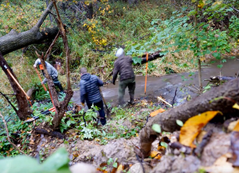
        </div>
        <div class="past-txt">
          <aside class="aside-txt">
            Saturday, October 13, 2018
          </aside>
          <h4>Stream Habitat Work Party</h4>
          <p>A few TRAA members cleared a number of fallen trees and other blockages on October 13th.</p><br>

          <p>Dan Shinkelshoek made a video of the proceedings.</p><br>

          <p>If you have further questions about TRAA stream habitat projects and events, please come out to the TRAA General Meeting on Wednesday, November 14th or contact us.</p>
        </div>

        <div class="past-img">
          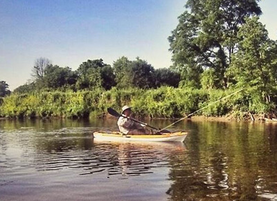
        </div>
        <div class="past-txt">
          <aside class="aside-txt">
            Saturday, July 14, 2018
          </aside>
          <h4>Annual TRAA Paddle & Fish</h4>
          <p>This year we be mixed it up a bit by having the Annual TRAA Paddle & Fish on Sharon Creek Reservoir. A thunderstorm threatened but only gave us a few minutes of rain to cool us off.</p><br>
          <p>Fish targeted were largemouth bass, crappie and other panfish as well as some bruiser carp. Many bass were caught with some crappies mixed in to make it interesting. Paul Holmes ended up with the largest fish, a nice smallmouth bass.</p><br>
          <p>A BBQ lunch followed with Rick Ornato supplying the grill and the cooking expertise - Thanks Rick!</p>
        </div>

        <div class="past-img">
          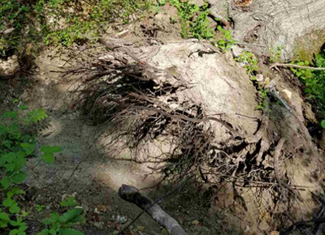
        </div>
        <div class="past-txt">
          <aside class="aside-txt">
            Thursday, July 12, 2018
          </aside>
          <h4>Stream Habitat Work Party</h4>
          <p>We were very excited to have a group from the MNRF's Stewardship Youth Rangers Program to do some work on Komoka Creek. This program gives groups of 16 or 17 year-olds an opportunity to spend 8 weeks working outdoors on natural resource management projects in their own community.</p><br>
          <p>They worked on clearing a section of Komoka Creek upstream of the TRAA trout hatchery.  A major tree had fallen and a lot of the bank went with it. This created a blockage and was diverting the stream, increasing the likelihood of further bank side damage and erosion.</p><br>
          <p>We were also fairly certain that this was a barrier to migratory and resident fish passage.</p>
        </div>

        <div class="past-img">
          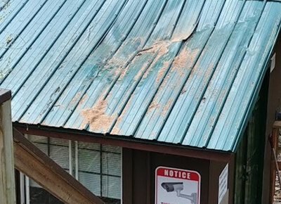
        </div>
        <div class="past-txt">
          <aside class="aside-txt">
            Saturday, June 30, 2018
          </aside>
          <h4>Work Party - Hatchery Roof</h4>
          <p>As most members already know, a large tree was blown down during high winds on May 2nd. Ironically, barely a week before this happened, we had already removed a couple of dead trees that had been identified as potential hazards to the hatchery.</p><br>
          <p>At the time, we thought this tree wasn't a threat as it was well up the hill and well off to one side. It unfortunately glanced off of a couple of other trees as it fell, steering it directly on to the hatchery roof!</p><br>
          <p>The resulting damage, shown in this picture after the tree was removed, will required the replacement of these metal roof panels and the plywood sheathing underneath them. A couple of the roof trusses also needed to be repaired.</p><br>
          <p>It was an incredibly hot morning but the job was finished in record time. There were materials left over for the tool shed roof as well but that will be another day!</p>
        </div>
      </div>
      <nav class="events-past-nav" id="2017">
        <ul><li><a href="#2019">2019</a></li><li><a href="#2018">2018</a></li><li><a href="#2017">2017</a></li><li><a href="#2017">OLDER</a></li><ul>
      </nav>
      <div class="past-column">
        <div class="past-img">
          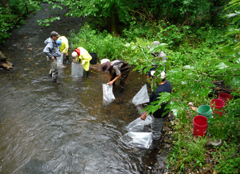
        </div>
        <div class="past-txt">
          <aside class="aside-txt">
            Saturday, June 23, 2017
          </aside>
          <h4>Rainbow Trout Release</h4>
          <p>This year we were pleased to welcome visitors from Chipewas of the Thames First Nation, to tour the trout hatchery and assist us with the release of more than 40,000 rainbow trout.</p><br>
          <p>Everyone was thrilled that the bald eagles with their young ones were keeping an eye on the proceedings at the release site.</p><br>
          <p>This was another successful year and those volunteers on the trout hatchery rotation are to be commended. The trout hatchery will undergo roof repairs as a result of a damaging blow from a fallen tree. Otherwise, the hatchery will be idle for the summer except for routine maintenance.</p>
        </div>

        <div class="past-img">
          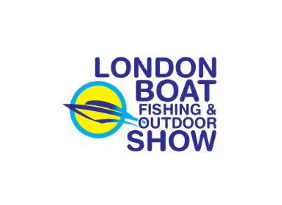
        </div>
        <div class="past-txt">
          <aside class="aside-txt">
            February 23 to February 25, 2017
          </aside>
          <h4>TRAA - Show Time!</h4>
          <p>The TRAA again had a presence at the London Boat, Fishing and Outdoor Show.</p><br>
          <p>A huge "Thank You" goes out to Pat, Dave and all the gang at Angling Sports for giving us space to set up our snazzy new banners. Also many thanks to those TRAA members who took the tiime to hang out at the show, chatting to folks about what the TRAA does and generally about fishing in and around London.</p>
        </div>

        <div class="past-img">
          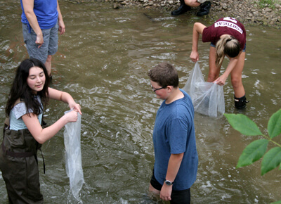
        </div>
        <div class="past-txt">
          <aside class="aside-txt">
            Friday, June 16, 2017
          </aside>
          <h4>Rainbow Trout Release</h4>
          <p>The rainbow trout fingerlings that we raised from eggs over this past winter were released into Dingman Creek.</p><br>
          <p>This year the TRAA welcomed the ECO Club from Louise Arbour French Immersion Public School, to come out and assist successfully releasing in excess of 40,000 rainbow trout. Both the weather and the water conditions were nearly perfect, adding to a fun and rewarding learning experience for these enthusiastic students.</p><br>
          <p>The trout hatchery is now idle and will undergo some upgrades over the summer in addition to the regular yearly maintenance. If you'd like to get in on this and other TRAA activities just contact us.</p>
        </div>

        <div class="past-img">
          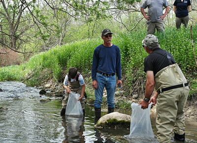
        </div>
        <div class="past-txt">
          <aside class="aside-txt">
            Wednesday, May 17, 2017
          </aside>
          <h4>Brook Trout Release</h4>
          <p>The brook trout fingerlings went on the annual road trip throughout rural areas northeast of London to be released into several different cold water tributaries. These were brook trout eggs that we harvested with folks from the Upper Thames Conservation Authority (UTRCA) to be raised in the TRAA trout hatchery.</p><br>
          <p>Thanks to everyone that has put in their time and effort to collect the brook trout eggs, monitor them in the hatchery and participate in the release.</p><br>
          <p>Members Rob and Owen Huber, Stan Gibbs, and Bill Vandewetering did most of the transfer and transportation duties with the support of the Upper Thames Conservation Authority, Ministry of Natural Resources.</p><br>
          <p>Special thanks to all of the landowners for being involved with the habitat improvements of these little coldwater streams into which these trout were released.</p>
        </div>
      </div>
      <nav class="events-past-nav">
        <ul><li><a href="#2019">2019</a></li><li><a href="#2018">2018</a></li><li><a href="#2017">2017</a></li><li><a href="#2017">OLDER</a></li><ul>
      </nav>
    </section>

    <footer id="footer" class="clear">
      <section id="footer-info">
        <section id="quicklinks">
          <h3>Quick Links</h3>
          <nav id="sub-social">
            <ul>
              <li><a href="https://www.facebook.com/groups/4TRAA/about/" target="_blank"></a></li>
              <li><a href="https://www.youtube.com/channel/UCSuwqQ-HzLQw-gylALz5YkA" target="_blank"></a></li>
              <li><a href="mailto: traa@anglers.org" target="_blank"></a></li>
            </ul>
          </nav>
          <nav id="sub-nav">
            <div id="sub-nav-1">
              <ul>
                <li><a href="index.html">HOME</a></li>
                <li><a href="about.html">ABOUT</a></li>
                <li><a href="events.html">EVENTS</a></li>
              </ul>
            </div>
            <div id="sub-nav-2">
              <ul>
                <li><a href="#">NEWS</a></li>
                <li><a href="projects.html">PROJECTS</a></li>
                <li><a href="resources.html">RESOURCES</a></li>
              </ul>
            </div>
            <div id="sub-nav-3">
              <ul>
                <li><a href="#">FUNDRAISERS</a></li>
                <li><a href="#">NEWSLETTER</a></li>
                <li><a href="contact.html">CONTACT US</a></li>
              </ul>
            </div>
          </nav>
        </section>
        <section id="sub-contact">
          <h3>Contact Information</h3>
          <div id="sub-contact-0">
            <div id="sub-contact-1">
              <ul>
                <li><a href="mailto: traa@anglers.org" target="_blank"></a></li>
                <li><a href="https://www.google.com/maps/place/790+Southdale+Rd+E,+London,+ON+N6E+1A8/@42.9455737,-81.2215785,17z/data=!3m1!4b1!4m5!3m4!1s0x882ef3b01c9e9983:0x84558efdb9f3a3a1!8m2!3d42.9455737!4d-81.2193898" target="blank"></a></li>
              </ul>
            </div>
            <div id="sub-contact-2">
              <ul>
                <li><p>traa@anglers.org</p></li>
                <li><p>Thames River Anglers Association<br>2202 Coronation Drive</p></li>
              </ul>
            </div>
          </div>
        </section>
      </section>
      <section id="copyright" class="clear">
        <p>ANGLERS.ORG © THAMES RIVER ANGLERS ASSOCIATION 2019</p>
      </section>

    </footer>
  </main>
  <script src="js/main.js"></script>
</body>
</html>
